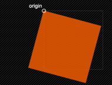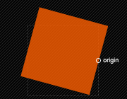
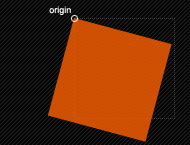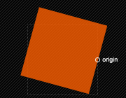 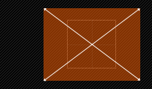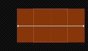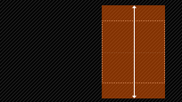
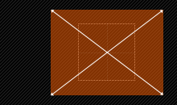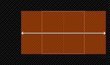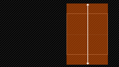

 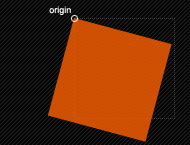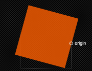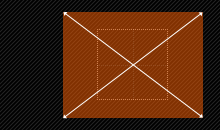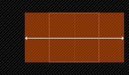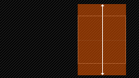
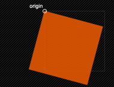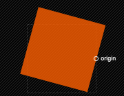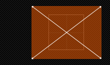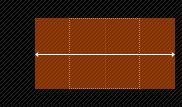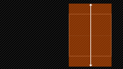transform也能连着写
不过每次变换后的坐标轴是不一样的，后一次的变换是跟着他前一次的坐标轴来变换的，而非原始坐标轴，所以改变顺序的话，会得到不一样的效果
旋转和斜切，他们逆时针的是正角度，顺时针的是负角度
e,f是平移，a，d是缩放，b，c是斜切，a，b，c，d是旋转
x原横坐标点，x'变换后的横坐标点 x'= ax+cy+e;
y原纵坐标点，y'变换后的横坐标点，y' = bx+dy+f;
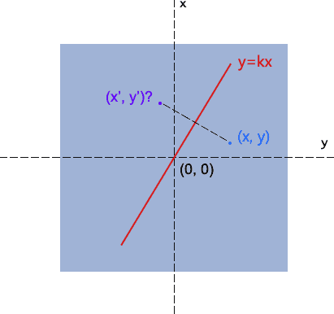求镜像的原理就是一点关于一天直线对称，已知x，y，已知y=kx直线经过原点，求x'y'
方法：1.两点的构成直线的中点在y=kx直线上。2.两直线是垂直的，所以斜率想成是-1。
斜率：k=tan@
两点的中点坐标：((x1+x2)/2,(y1+y2)/2)
两点的距离：sqrt((x1-x2)^2+(y1-y2)^2)
镜像的xy轴还是不变的
然后我们会发现x轴镜像和y轴镜像只有a和d是有参数的，所以得出的结论就是，这两个镜像是特殊缩放得到的结果，而关于y=kx直线方程镜像k=1的时候，就是种特殊的斜切，当k不为1是，abcd都有参数，那就是种特殊的旋转。
不用担心一个属性的书写次数
preserve-3d，是作用于子元素的，当父元素设置了perspective透视后，并没有应用3d变换的时候，写不写preserve-3d，子元素的3d变换的效果是一样的，当父元素设置了3d变换后，设与不设preserve-3d对子元素的效果就大不一样了，设了子元素的3d变换就基于父元素的3d变换而变换，若是不设，那3d变换的子元素就没有透视变化，结论就是perspective透视效果只应用于子元素，后代元素用3d变换没有3d效果，想要有3d效果，必须每个子元素的父元素设置preserve-3d，或是再设个perspective透视。
3d变换里面应用2d变换xyz轴是不变的，3d2d的轴是公用的
perspective写在里面和外面是不一样的，写在里面的，自身也有透视效果
perspective-origin的初始视点在写的这个元素的中心位置上
perspective属性设置镜头到元素平面的距离。所有元素都是放置在z=0的平面上。比如perspective(300px)表示，镜头距离元素表面的位置是300像素。